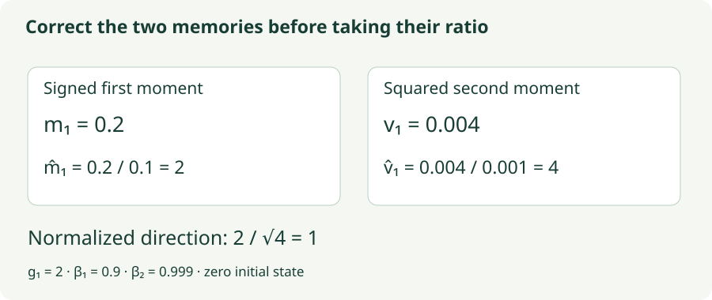

Adam: Two Memories and Bias Correction
Build Adam from its moments, audit the first update, and distinguish AdamW from L2 regularization.
Adam combines a signed estimate of where gradients are pointing with an unsigned estimate of how large they have been. The first supplies direction; the second supplies a coordinate-wise scale. A third ingredient—bias correction—compensates for starting both memories at zero.
The useful way to read Adam is as a sequence of state updates, not a single dense fraction. We will calculate its first step, explain exactly what the correction removes, and then separate Adam from AdamW.
1. Two memories with different jobs
At step $t$, evaluate $g_t=\nabla L_{\mathcal B_t}(w_{t-1})$. Initialize $m_0=v_0=0$. Adam updates
The first moment $m_t$ is signed: positive and negative gradients can cancel. The second raw moment $v_t$ is nonnegative: large gradients contribute strongly regardless of sign. It estimates squared magnitude, not variance around a mean.
The two decay coefficients need not match. A shorter first-moment memory can react to a direction change while a longer second-moment memory provides a steadier scale. That difference also means the numerator and denominator summarize different time horizons.
The hat marks a bias-corrected estimate. The exponent in $\beta_1^t$ is the number of optimizer updates, not the number of epochs or examples. Divisions and square roots are element-wise. Epsilon is outside the square root in this formulation.
2. Why zero initialization needs correction
Unroll the first moment:
The gradient weights sum to $1-\beta_1^t$, which is less than one early in training. The missing weight is effectively assigned to the initial zero state. If every supplied gradient were exactly $g$, then $m_t=(1-\beta_1^t)g$; dividing by that weight sum recovers $g$ exactly.
For random gradients with a constant mean $\mu$, the same argument gives $\mathbb E[m_t]=(1-\beta_1^t)\mu$. Likewise, a constant second moment is attenuated by $1-\beta_2^t$. This is the initialization bias the correction addresses.
Real training gradients change as the parameters move. The correction still normalizes the available exponential weights, but it does not remove lag, sampling noise, or the consequences of averaging gradients from different parameter values. “Bias-corrected” does not mean “equal to today’s true full gradient.”

3. Audit the first update
Use one coordinate with $g_1=2$, $\beta_1=0.9$, $\beta_2=0.999$, and $\eta=0.1$. Ignore epsilon only for this hand calculation. The raw moments are
Bias correction gives $\widehat m_1=0.2/0.1=2$ and $\widehat v_1=0.004/0.001=4$. Therefore $\Delta w_1=-0.1(2/\sqrt4)=-0.1$. For any nonzero first gradient and negligible epsilon, the first corrected step is approximately $-\eta\operatorname{sign}(g_1)$.
Without correction, the normalized direction would be $0.2/\sqrt{0.004}\approx3.1623$, producing a displacement near $-0.3162$. Both raw buffers were small, but the denominator was suppressed more strongly in the relevant ratio. Small state values do not automatically imply a small update.
Now supply $g_2=-2$. The first moment becomes $0.9(0.2)+0.1(-2)=-0.02$, while $v_2=0.999(0.004)+0.001(4)=0.007996$. The corrected values are $\widehat m_2\approx-0.105263$ and $\widehat v_2=4$, giving a displacement near $+0.005263$. The sign reversal cancels much of the numerator while leaving gradient magnitude high.
4. Lab: inspect what the update actually divides
This returns to the shared quadratic dataset. The lab displays both raw moments and the quantities actually used in the final division. The default learning rate 0.07 is chosen for this small visualization, not as a suggested neural-network setting.
Adam with visible moments
Turn bias correction off to run an ablation, then compare the first displacement from the same starting point.
- Inspect step 1: compare correction on and off. The raw moments are identical, but the used numerator and denominator differ.
- Separate memories: set $\beta_1=0$ to remove signed averaging while keeping second-moment adaptation and its correction. This is not exactly the uncorrected RMSprop rule.
- Change the noise: compare a full gradient with one sampled row. The path can wander even though the denominator adapts.
5. Why AdamW separates weight decay
Adding an L2 penalty $\tfrac\lambda2\|w\|^2$ to the loss adds $\lambda w$ to the gradient. Ordinary Adam then feeds this combined gradient into both moment buffers. The resulting shrinkage is entangled with history and coordinate-wise normalization.
AdamW keeps the task-gradient moments separate and applies a direct shrinkage term:
A small calculation shows the difference. Start at $w_0=2$, with zero task gradient, fresh buffers, $\eta=0.1$, and $\lambda=0.1$. L2-regularized Adam sees gradient $0.2$; its first normalized direction is approximately 1, so $w_1\approx1.9$. AdamW has zero task-gradient update and direct shrinkage $0.1(0.1)(2)=0.02$, so $w_1=1.98$.
For plain SGD without momentum, adding $\lambda w$ to the gradient gives the same direct shrinkage expression. Adaptive normalization breaks that equivalence. The AdamW paper formalizes this decoupling. It does not imply every parameter should necessarily receive the same decay.
6. An implementation you can audit
# One AdamW step. Moments use only the task gradient.
t += 1
m = beta1 * m + (1 - beta1) * grad
v = beta2 * v + (1 - beta2) * grad.square()
m_hat = m / (1 - beta1 ** t)
v_hat = v / (1 - beta2 ** t)
parameter *= 1 - lr * weight_decay
parameter -= lr * m_hat / (v_hat.sqrt() + eps)
optimizer = torch.optim.AdamW(
model.parameters(), lr=3e-4, betas=(0.9, 0.999),
eps=1e-8, weight_decay=0.01
)This shows the recurrence rather than a drop-in replacement for autograd-safe library code. In a real training loop, prefer the library optimizer and its state handling. The example hyperparameters establish the convention; tune them for the model and training budget.
Adam stores two scalars per parameter, plus step bookkeeping. Checkpoints must preserve moments and update counts. Mixed-precision implementations often maintain optimizer state in a higher precision than the model’s forward computation. An epsilon suitable for one numerical format may be ineffective in another. Inspect the actual implementation and dtype rather than copying a literal blindly.
Gradient clipping also has an order: clipping the raw gradient before the optimizer changes the input to both moments. Clipping the final update changes a different quantity. A zero gradient tensor can still lead to motion from existing momentum or weight decay; an absent gradient may be handled differently by the library.
7. What Adam does not promise
Adam’s scaling is diagonal in the chosen parameter coordinates. It does not represent arbitrary couplings between them. Its history is also path-dependent. A smaller training loss in a short toy run does not establish better generalization or faster end-to-end neural-network training.
Nor is every coordinate’s update always bounded by $\eta$. Different numerator and denominator memories can create larger ratios after changes in the gradient sequence. As with other methods, inspect update norms, loss trends, and validation metrics. A learning-rate schedule remains meaningful even though the optimizer adapts per coordinate.
8. Questions worth answering
That is a helpful starting analogy, but incomplete. Adam uses an EMA convention for the signed gradient, an independently decayed squared-gradient history, and explicit correction of both zero-initialized moments. The precise order and coefficients define the algorithm.
Yes. Batch averaging changes the gradient’s second moment by reducing its noise component. That changes the denominator’s history as well as the number of optimizer steps in a fixed number of epochs.
No, if the moment buffers are restored. The exponent and buffers belong to the same history. Resetting only one creates an inconsistent update.
Sources
Kingma and Ba, Adam: A Method for Stochastic Optimization; Loshchilov and Hutter, Decoupled Weight Decay Regularization; PyTorch Adam; PyTorch AdamW. Numerical sequences and visualizations are original teaching examples.